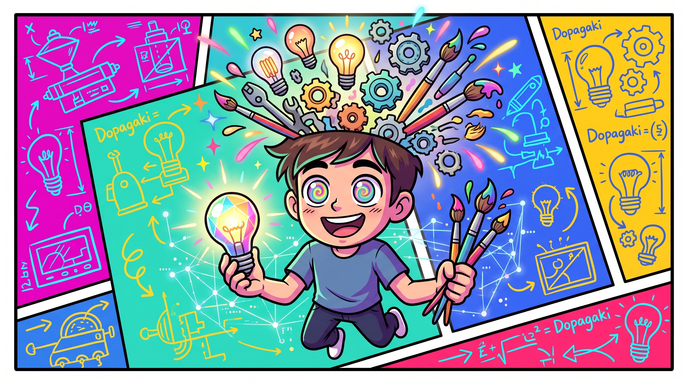

DIAGNOSIS RESULT
直感・創発型（クリエイタータイプ）

常識にとらわれない柔軟なひらめきと独自のセンスを持っています。型通りのルーティン作業よりも、余白や自由度のある環境で爆発的なアイデアを生み出す開拓者です。
向いている環境・職能：
新規事業企画、コンテンツ制作、デザイン、コピーライティング、研究開発（R&D）
結果を画像付きでXにポスト
新規事業企画、コンテンツ制作、デザイン、コピーライティング、研究開発（R&D）